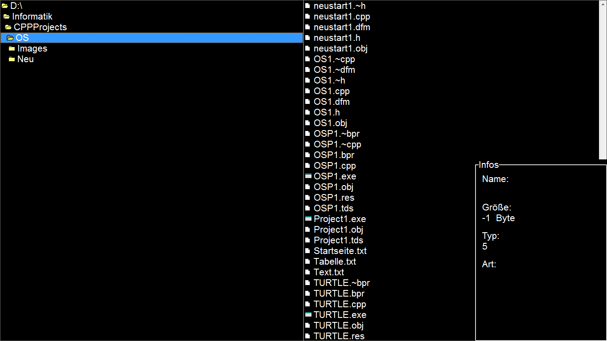

Turtle OS
There are two Versions of Turtle OS, firstly the “real” OS, that is, one that can be booted. But this one is still entirely written in
Assembler, which is not, what we planned to do.Secondly, there is a Version, which ca run on Windows. It has the ending .exe and not even
this one is ready.
We're sorry to tell we have stopped working on this project.
